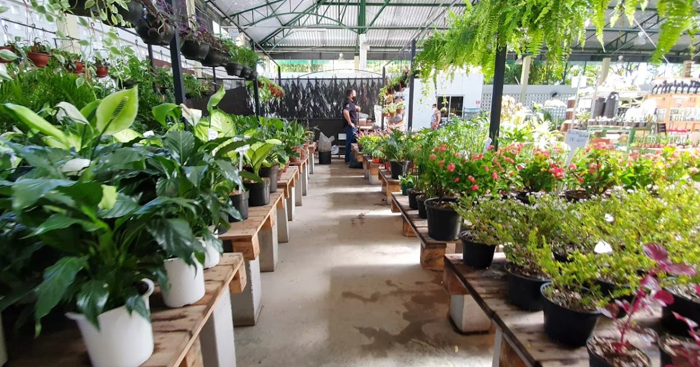

Sobre Nós
A floricultura é um tradicional polo de exportação do Estado do Ceará. E agora ganha mais um importante estímulo para expandir os negócios do setor: o Mercado das Flores e Plantas Ornamentais. No empreendimento, produtores e comerciantes cearenses irão comercializar diversos tipos de flores. Além de beneficiar produtores, comerciantes e consumidores de todo o Estado, o espaço também objetiva atrair a população para nova opção de lazer. Serão realizados no Mercado feiras, encontros do setor da floricultura e também eventos culturais.

Localização
Localizado em Fortaleza, na Praça Joaquim Távora (Avenida Pontes Vieira), o espaço foi construído através do projeto “Juntos por Fortaleza, parceria entre o Governo do Ceará e a Prefeitura de Fortaleza.
Lojas
A estrutura é composta por 39 boxes construídos em uma área de 1.455 m², onde cada unidade terá 18 m². Os boxes serão mantidos por floristas e comerciantes de todo o Estado.

Horários
- Segunda a sexta
- - 8:00 às 17:00
- Sábado e domingo
- - 8:00 às 13:00